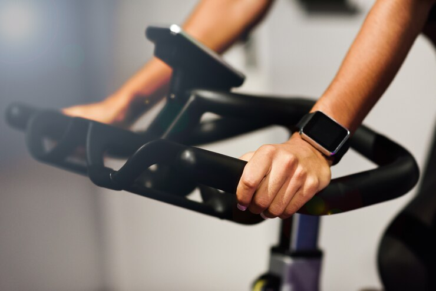
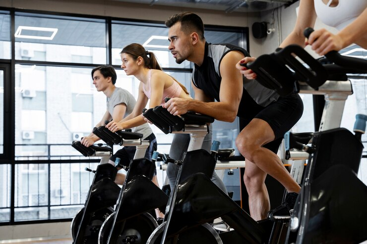
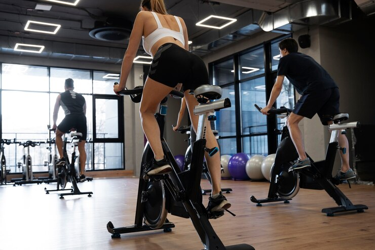

RECUPERACIÓN (REC)
Martes 18:00 - 18:30
Profesores

FARTLEK
Jueves 19:00 - 19:40
Profesores



Sesión de recuperación en la cual trabajamos a una intensidad de entre el 50 – 60% de la frecuencia cardíaca máxima (FCmáx). Es recomendable para aquellas personas que quieran iniciarse en la práctica del spinning y o tengan una condición física baja. También es adecuada para aquellos usuarios que lleven bastante entrenamiento acumulando y necesitan un día de recuperación activa.
Sesión de spinning variable con la combinación de terrenos planos y de montaña, junto con trabajo de cambios de ritmo que favorece el aumento de la capacidad cardiovascular. La intensidad ronda entre el 65 y el 85% de la FCmáx.
En esta modalidad se sube a un terreno montañoso con diferentes tipos de subidas, con un sólo pico o varios, con más pendiente o menos. El objetivo es trabajar las piernas para aumentar la resistencia muscular y ayudar a mejorar la capacidad aeróbica, ya que se trabaja entre 75 y 85% de la FCmáx.